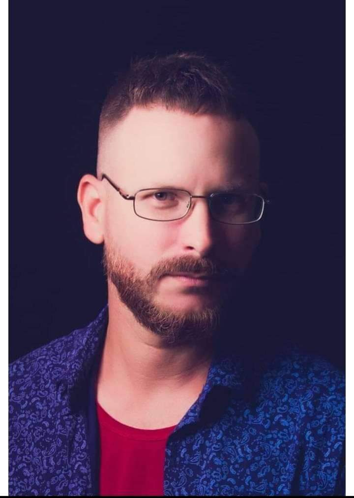

Jose Rodriguez

Summary
I am a dedicated and versatile professional with a background in computer
science and software development, as well as extensive experience in
photography. Currently working in the retail industry while continuing to
hone my technical skills in web development, I aim to leverage my diverse
skill set and experience to transition back into a tech-focused career
while continuing to grow as a photographer.
Education
Work Experience
Assistant Manager - Butcher Department
Supermarket, USA, 2023 - Present
-
Organize daily work schedules and tasks for the butcher department.
-
Manage inventory, ensuring proper stock levels in refrigerators,
reserves, and storage.
-
Provide excellent customer service, assist customers, and sell meat
products.
- Oversee the pricing system and scales for meat packaging.
-
Collaborate with the manager to ensure department efficiency and
productivity.
Software Developer and Project Leader
Desoft, Cienfuegos, Cuba, 2008 - 2012
-
Developed and maintained web applications using HTML, JavaScript, CSS,
JSP, and Ext JS.
- Designed and managed databases using PostgreSQL and SQL Server.
- Developed all projects using Java.
-
Conducted client interviews to gather and document functional and
non-functional requirements.
-
Created use case diagrams and followed software development
methodologies.
-
Negotiated project timelines, deliverables, and budgets with clients.
- Led project teams to ensure successful project completion.
-
Participated in science and technology events with project leadership,
earning awards.
Owner/Photographer
ChebetoStudio, Cienfuegos, Cuba, 2012 - 2022
-
Managed and operated a successful photography business specializing in
portrait photography.
-
Developed marketing strategies and handled advertising to attract
clients.
-
Managed business finances, including budgeting and accounting tasks.
- Edited and enhanced photos to meet client specifications.
Skills
- Web Development: HTML, CSS, JavaScript, JSP, Ext JS
- Database Management: PostgreSQL, SQL Server
- Programming Languages: Java
- Photography: Advanced portrait photography techniques
- Software Documentation and Client Communication
- Microsoft Office Suite
- Marketing and Advertising
- Basic Accounting and Budgeting
- Retail Management and Customer Service
Awards, Certifications, and Achievements
- First Place in Science and Technology Forum (Faculty)
University of Computer Sciences (UCI), Havana, Cuba, 2007
- National Nomination for Science and Technology Competition
University of Computer Sciences (UCI), Havana, Cuba, 2007
- Thesis Project with Molecular Engineering Center
Calculations of atomic and molecular descriptors for drug development.
University of Computer Sciences (UCI), Havana, Cuba, 2007
- Most Outstanding Student in Class
University of Computer Sciences (UCI), Havana, Cuba
2008
- Science and Technology Awards for Project Leadership
Desoft, Cienfuegos, Cuba, 2010, 2011
Others